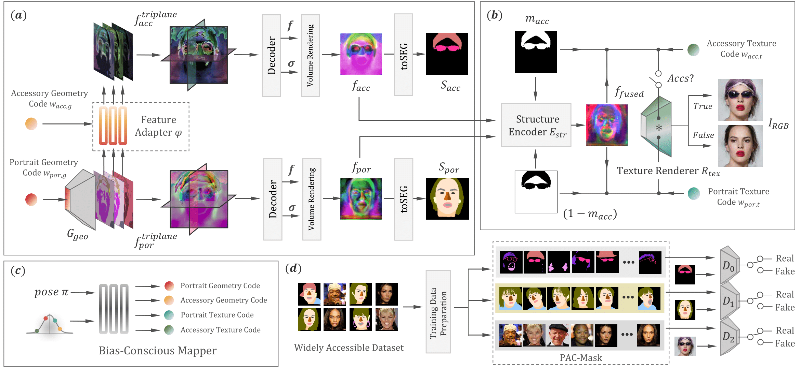

Through user-drawn shapes of scribbles (top row) and diverse texture selections, Pomo3D can generate personalized accessories on specified avatars.
These scribble maps can be directly drawn within our provided GUI, and multiple scribbles can be stacked together to achieve multiple accessories worn concurrently.
All the results are multi-view consistent and operate at an interactive frame rate.
Separation of Portraits and Decorative Attributes
Video
*Note: Some results are generated by the earlier version of the model.
Overview

(a) Generation of dual geometry tri-planes: we construct two tri-planes for the geometry modeling of portraits and accessories. We then obtain the projected feature maps and corresponding semantic maps via volume rendering.
(b) Structure-guided texture renderer: next, the structure encoder and texture renderer fuse the two projected feature maps and yield the output image. The variable Accs indicates whether the accessory is worn on the portrait, and thus there are two possible outcomes.
(c) Bias-conscious mapper: considering the biases in existing datasets, a bias-conscious mapper is proposed to map Gaussian noise into four latent codes for corresponding attributes.
(d) Data preparation and training scheme: PAC-Mask consists of three data groups: accessory semantic maps, portrait semantic maps, and overall RGB images. During training, we use three different discriminators along with these three data groups to conduct adversarial learning on the three branches of the network.
Smooth Transition Between Global Styles
Accessory Wearing on Stylized Portraits
Create Accessories from Random Codes or User's Scribble
Fine-Grained Texture Adjustment
Diverse Shape and Texture for Beard and Accessories
On the left are the source images, and on the right, we show the source images with various shapes of beards and earrings, paired with two different texture codes.
This allows users to create virtual avatars with unique and personalized accessories.
Inter- and Intra-domain Stylization
BibTeX
@article{liu2024pomo3d,
title={Pomo3D: 3D-Aware Portrait Accessorizing and More},
author={Liu, Tzu-Chieh and Liu, Chih-Ting and Chien, Shao-Yi},
journal={arXiv preprint arXiv:2409.14430},
year={2024}
}
.png)


.png)